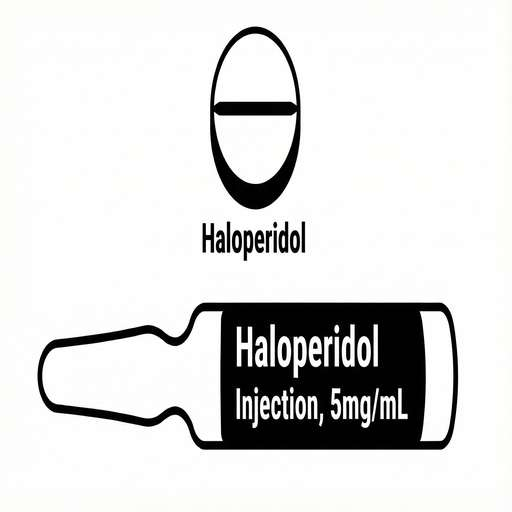
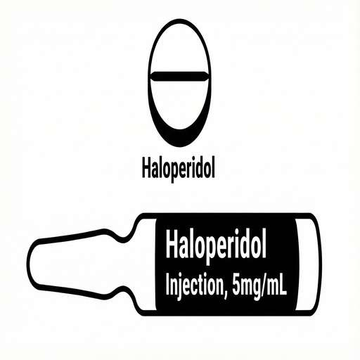
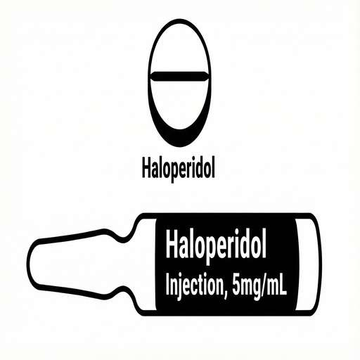

正在生成 PDF...
🧠 临终谵妄
管理与居家护理指南
什么是谵妄？
意识混乱与不安
大脑功能突然变化。分不清时间/地点，日夜颠倒，或情绪激动。
幻觉
看见或听见不存在的事物。对空抓挠。病人可能会感到害怕。
居家护理步骤
1
保持冷静
说话缓慢温柔。经常安抚病人。减少噪音和强光。
2
协助定向
使用时钟、日历和熟悉的物品。温柔地提醒病人当前的时间和地点。
诱因与药物
3
检查诱因
病人是否疼痛？是否便秘？是否无法排尿？
4
用药方案
 


按医嘱给药（颊粘膜/皮下注射）。如有需要，每1小时重复一次。
紧急求助
联系安宁疗护团队
出现以下情况请立即致电：
- 躁动/不安无法缓解。
- 有受伤或跌倒的风险。
- 病人发烧或呼吸困难。
临终谵妄管理
居家护理与症状指南
定义与症状
意识混乱与躁动
大脑功能突然变化。不知道时间/地点，日夜颠倒，试图下床。
幻觉
看见或听见不存在的事物。对空抓挠。表现出恐惧。
护理步骤
保持冷静与安抚
说话缓慢。减少噪音。使用柔和的灯光。
协助定向
使用熟悉的物品、时钟和日历来提醒病人周围环境。
检查诱因
检查是否疼痛、便秘或尿潴留。
安全措施
清理通道。如果情况不安全，请勿让病人独处。
药物治疗
按处方给药
通过颊粘膜（Buccal）或皮下注射（Subcut）给药。如有需要，每1小时重复一次。
紧急情况
如果出现以下情况，请联系安宁疗护团队：
- 躁动/不安无法缓解。
- 对自己或他人有伤害风险。
- 新发烧或呼吸困难。